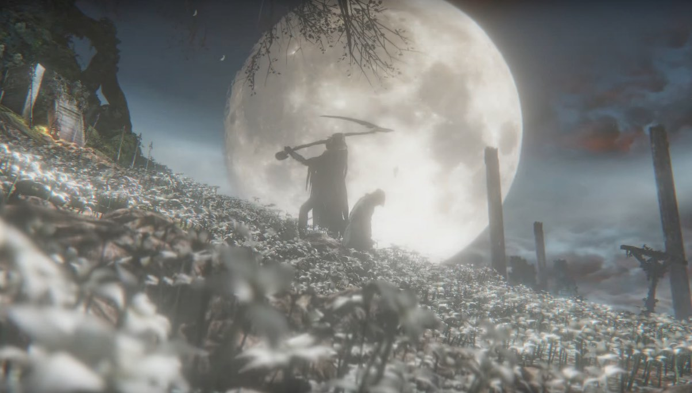
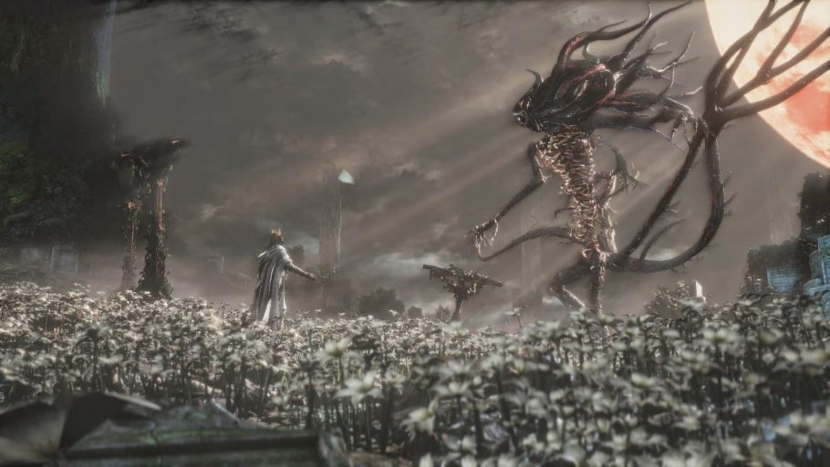

Existem finais diferentes dependendo de como o jogador toma suas decisões:
- Final 1: Amanhecer em Yharnam
- Final 2: Honrar Desejos
- Final 3: Nascimento de um Grande (final verdadeiro)
Você aceita a oferta de Gehrman no Sonho do Caçador. Ele o mata e você desperta em Yharnam ao amanhecer, aparentemente livre do pesadelo e da caçada.

Você recusa a oferta de Gehrman e o derrota em combate. Após a luta, a Presença da Lua aparece e o prende ao Sonho do Caçador. Você assume o lugar de Gehrman e se torna o novo guardião do Sonho.

Antes de enfrentar Gehrman, você consome três Cordões Umbilicais de um Grande. Depois de derrotá-lo, a Presença da Lua tenta prendê-lo, mas você resiste e a enfrenta. Ao vencê-la, você transcende a humanidade e renasce como um novo Grande, com a Boneca cuidando de você.
